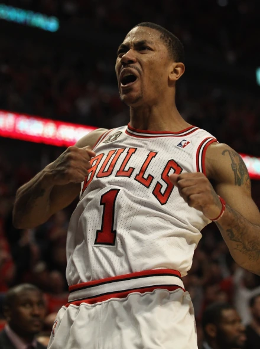

德里克·罗斯（Derrick Rose），1988年10月4日出生于美国伊利诺伊州芝加哥，美国职业篮球运动员，司职控球后卫，绰号“风城玫瑰”。
德里克·罗斯在2008年NBA选秀中于首轮第1顺位被芝加哥公牛队选中，新秀赛季当选NBA年度最佳新秀并夺得NBA全明星技巧挑战赛冠军。 2009-10赛季入选NBA全明星替补阵容。 2010年，罗斯随美国男篮夺得世锦赛冠军。 2010-11赛季，22岁的罗斯荣膺NBA常规赛最有价值球员（MVP），成为NBA历史上最年轻的MVP，并在该赛季入选NBA最佳阵容一阵和NBA全明星赛首发阵容。 2011年，NBA新劳资协议中增加“罗斯条款”，以使符合条件的优秀年轻球员能够更早地获得占据球队工资帽30%的顶薪合同。 2011-12赛季再度入选NBA全明星赛首发阵容。 2014年，罗斯随美国男篮夺得世界杯冠军。
2016年6月，罗斯被交易至纽约尼克斯队。 2017年7月，罗斯加盟克利夫兰骑士队。 2018年3月，罗斯加盟明尼苏达森林狼队。 2019年7月，罗斯加盟底特律活塞队。 2021年2月，罗斯重回纽约尼克斯队。 2023年7月，罗斯加盟孟菲斯灰熊队。 2024年9月25日，灰熊裁掉德里克·罗斯。 9月26日，罗斯宣布退役。
2025年1月，公牛队官方宣布将在2025-26赛季退役德里克·罗斯的1号球衣。
